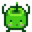

Pélican Ville

Pélican Ville est l'endroit où le joueur emménage au début du jeu, situé dans Stardew Valley. Pélican Ville est l'endroit où la plupart des Villageois vivent, travaillent et se rencontrent.
Lewis est le maire de Pélican Ville depuis plusieurs années; il dit qu'il n'a pas eu de concurrence pour le rôle depuis qu'il est devenu maire.
L'entrée nord-ouest de la ville est reliée aux Arrêt de bus et La ferme. Le passage sud-ouest est relié à la Forêt Sève-Cendreuse, qui contient La Ranch de Marnie, la Maison de Leah et la Tour du sorcier. Directement au sud de la ville se trouve La plage. Le nord de la ville se connecte à la Montagne, avec la Scierie, les Mines, la Guilde des aventuriers, la Voie ferrée, et la Carrière.
Initialement, il y a des Mauvaises herbes près du 2 allée des Saules, dans la zone derrière le 1 allée des Saules, derrière le Marché Joja, et à l'Ouest du Centre communautaire, en dessous de l'aire de jeu. Ces mauvaises herbes meurent en Hiver mais réapparaissent au début de chaque nouvelle année.
Lieux clés
| Image | Nom | Résidents |
|---|---|---|
| Magasin général de Pierre | ||
 |
Clinique d’Harvey | |
| Centre communautaire |  Junimos | |
 |
Musée | |

|
Forgeron | |
| Marché Joja | ||
 |
Saloon du fruit étoilé | |
 |
Librairie |
Autres Résidents
| Image | Nom | Résidents |
|---|---|---|
 |
1 Chemin de la Rivière | |
| Caravane | ||
 |
Manoir du maire | |
 |
1 allée des Saules | |
 |
2 allée des Saules |
Raton Laveur
Le premier jour non pluvieux de la troisième année, le Raton Laveur apparaît au sud de la Forêt Sève-Cendreuse, près de la sortie des égouts. Apporter 4 objets demandés par l'animal activera une cinématique dans laquelle il nettoie les détritus de la forêt, de sa plage, ainsi que ceux devant la Caravane. L'Enclos à chien abîmé reçoit quand à lui une amélioration.
Annecdotes
- Pélican Ville est située dans la république de Ferngill, en guerre contre l’empire Gotoro de l’autre côté de la mer Gem. [1].
- Le Dr Harvey, en appelant sa radio à ondes courtes, identifie son emplacement (à Pelican Ville) comme suit: 52 nord, 43,5 est. Ainsi, si Stardew Valley est sur Terre, il se trouve près d'un village appelé Krasnoye en Russie - à environ 160 km au nord-ouest de Saratov et à environ 600 km au nord-est de Moscou. "Krasnoye" signifie "beau" ou "rouge". Cependant, ce n'est pas sur un bord de mer.
Références
Historique
- 1.4 : Introduction du Raton Laveur. Les mauvaises herbes réapparaissent désormais chaque premier jour de Printemps.
| Emplacements | |
|---|---|
| Emplacements | Arrêt de bus • Carrière • Caverne du Crâne • Cimetière • Désert de Calico • Donjon du volcan • Égouts • Étang de ferme • Ferme • Forêt inexploitée • Forêt secrète • Forêt Sève-Cendreuse • Grotte de ferme • Grotte de maîtrise • Île Gingembre • Marais de la sorcière • Mine de la carrière • Mines • Montagne • Pélican Ville • Plage • Repaire des insectes mutants • Sommet • Tunnel • Voie ferrée • Wagonnet |